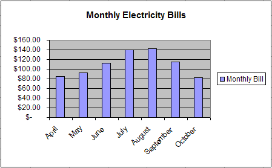
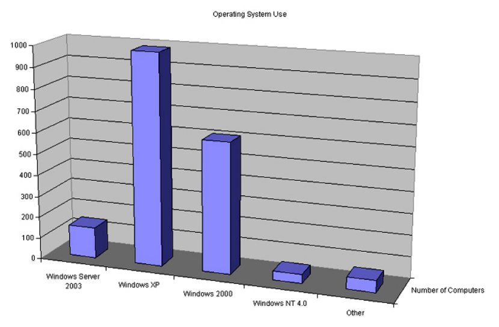
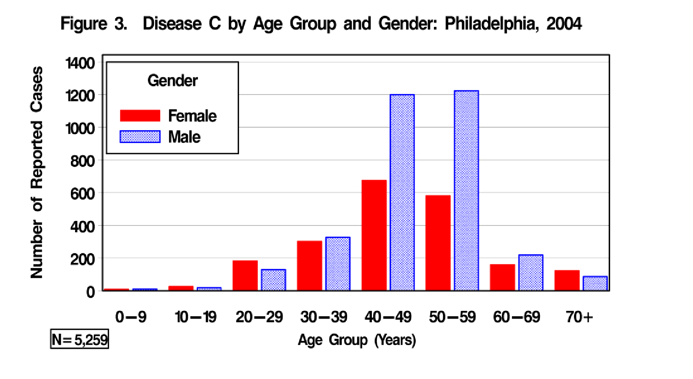
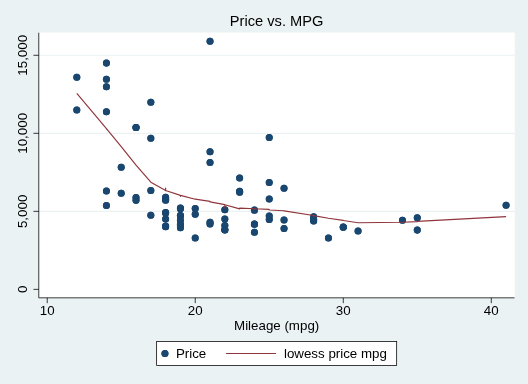
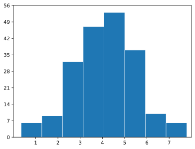
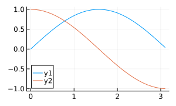
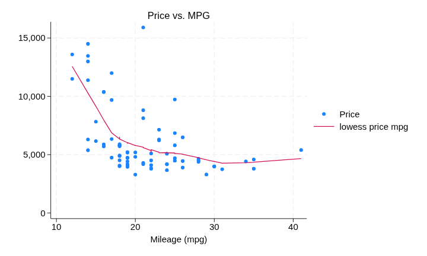
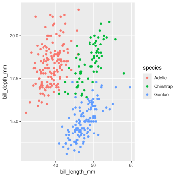
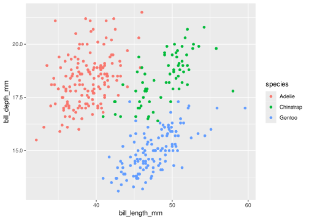
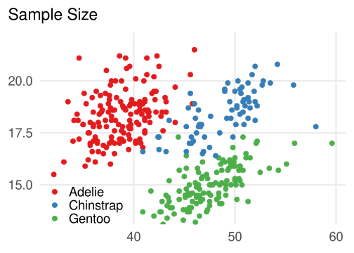

While one of the nicest packages to plot with, the defaults ggplot2 are a bit ugly. Historically every software packages had ugly plotting, but most of the new ones have greatly improved.
For example, here are some nostalgic charts from software in the 2000’s:

A nice simple Excel 2000 chart

These 3D charts were everywhere after Excel 2007

One I found from SAS 2006

Classic solid fill border Stata
Over the years the standard has moved over to a clean and minimalist look.
Excel 2000

Matplotlib

Julia Plots.jl

Stata 18 (2023)
Now, the default ggplot2 is still in the old world:
library(ggplot2)library(palmerpenguins)penguins |>ggplot() +geom_point(aes(x = bill_length_mm, y = bill_depth_mm, color = species))
Warning: Removed 2 rows containing missing values or values outside the scale range
(`geom_point()`).

Here are some ways to make it less cluttered:
Remove the grey rectangle in core of the chart: a good starting point for everything else.
Remove the minor gridlines: they are often overkill and needlessly clutter.
Make the y-axis label horizontal: text should be in the orientiation you read it, this ain’t a bookstore.
Move the legend inside the plot. This is the only bit which isn’t (as far as I know) easily automated.
It includes some good practice tips that ggplot2 doesn’t do by default like:
Having a horizontal y axis label with labs(subtitle = ...
Reducing gridline clutter with theme_minimal and panel.grid.minor.y = element_blank().
Moving the legend into the plot to improve the layout with legend.position = "inside".
Removing unnecessary labels, like date on the x-axis with labs(x = NULL).
Brings 0 into the plot since it’s in the neighborhood with scale_y_continuous(limits = c(0, NA))
First some setup. Always start by defining all the tables you’re using, so the person running your code can get the “you can’t access this table” error quickly.
This is a default plot without any tweaks:
library(tidyverse)
penguins |>ggplot() +geom_point(aes(x = bill_length_mm, y = bill_depth_mm, color = species))
Warning: Removed 2 rows containing missing values or values outside the scale range
(`geom_point()`).

And this is it after inserting some good practice. I tend to not put titles in ggplot, and add an “active” title wherever the plot is going, for example in powerpoint.
penguins |>ggplot() +geom_point(aes(x = bill_length_mm,y = bill_depth_mm,color = species ),size =3 ) +theme_minimal(base_size =23) +# Always make this as big as you can, especially in slides.scale_y_continuous(labels = scales::comma_format(), # Comma seperated number on labels, e.g. "1,000"expand =expansion(mult =c(0, 0.1)), # No expansion (0%) at the bottom, 10% expansion at the top of the y axis.limits =c(NA, NA) # Include 0 if it's in the neighborhood: NA makes the top fit your data. ) +labs(subtitle ="Sample Size", # Here this is our y axis label, subtitle makes it horizontal.# We can remove some other labels:y =NULL, # Y axis label: Null removes the element, so there's no white space (don't use "").x =NULL, # X axis label: Date is obvious, so we don't need a label.color =NULL, # Legend title for colour: in this case also obvious. ) +scale_color_brewer(palette ="Set1") +# Nicer color schemetheme(plot.title.position ="plot", # Move the subtitle/title to align with leftmost part of chartlegend.position ="inside", # Legend inside the plotlegend.position.inside =c(0.15, 0.1), # Move legend to the right (75%) and top (80%)panel.grid.minor.y =element_blank(), # Remove gridlinespanel.grid.minor.x =element_blank(),# panel.grid.major.x = element_blank(), )
Warning: Removed 2 rows containing missing values or values outside the scale range
(`geom_point()`).

Saving Charts
Use this to save and preview the output as you go along. If you want things to stay high resolution no matter the zoom level use a vector output format, like svg or pdf:
ggsave("lfs_count.svg",device = svglite::svglite, # Use `svglite` rather than the default `svg` device.# 7 x 5 is a good aspect ratio most of the time.width =7,height =5)